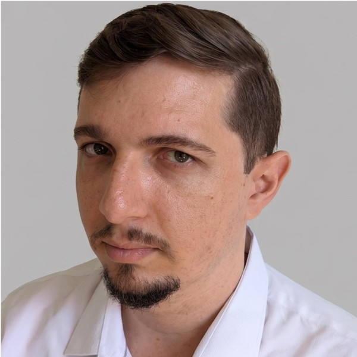
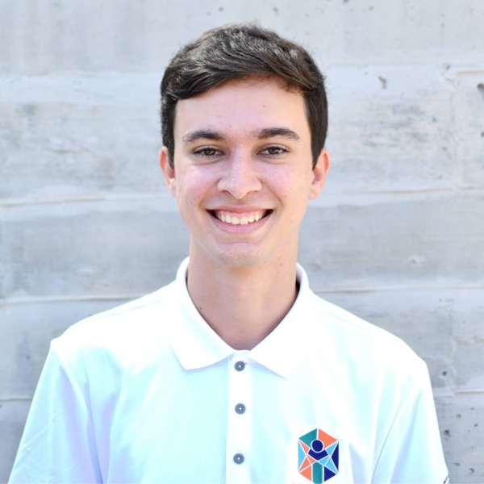
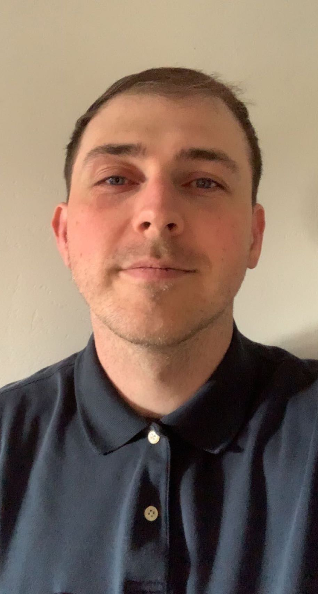
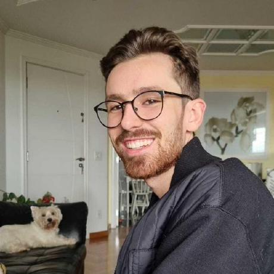

Students & Advising
Last update: October 2026
It's a privilege and a pleasure to work with so many brilliant and motivated students and collaborators. Without them, it would have been impossible to arrive here.
Prospective students
I welcome inquiries from students interested in human-AI collaboration, open source communities, and computing education. Opportunities depend on research fit and available funding. Please email a brief description of your research interests and your CV. You may also include a link to a relevant project or paper. Mention your intended degree, institution, and start date.
Current advisees
-

-

Pedro OliveiraPh.D. student, co-advisor · NAU · 2024-presentOpen source governance and community sustainability
-

Jacob PenneyPh.D. student, co-advisor · NAU · 2023-presentLearning and skill development with large language models
-

Former postdoctoral scholars
- Alessandro Garcia (2024)
- Katia Felizardo (2023-2024)
- João Felipe Pimentel (2022-2023)
- Igor Wiese (2019-2021)
- Igor Steinmacher (2017-2018)
- Christoph Treude (2015-2016)
Former Ph.D. students
- Italo Santos (2021-2025)
- Fabio Marcos dos Santos (2019–2023)
- Bianca Trinkenreich (2019–2022), co-advisor
- Dhanielly Rodrigues Lima (2015-2022), co-advisor
- Mairieli Santos Wessel (2018-2021)
- Ana Paula Chaves Steinmacher (2017–2020)
- Yorah Bosse (2015–2020)
- Jefferson Silva (2015–2019)
- Ana Paula Oliveira Bertholdo (2013–2018)
- Gustavo Ansaldi Oliva (2011–2017)
- Maurício Aniche (2012–2016)
- Igor Scaliante Wiese (2011–2016)
- Igor Steinmacher (2011–2015)
Former M.Sc. students
- Misan Paul Etchie (2024–2026)
- Luiz Felipe Fronchetti Dias (2018–2023)
- Marcelo de Rezende Martins (2018–2020)
- Suelen Goularte Carvalho (2014–2018)
- Rodrigo Magalhães Santos (2015–2017)
- José Teodoro da Silva (2012–2015)
- Guilherme de Maio Nogueira (2011–2014)
- Maison Melotti (2013–2014), co-advisor
- Leonardo A. F. Leite (2011–2014)
- Mauricio José de Oliveira de Diana (2009–2013)
- Carlos Leonardo Herrera Muñoz (2009–2013)
- Edith Zaida Sonco Mamani (2009–2012)
- Straus Michalsky (2009–2012)
- Geiser Chalco Challco (2008–2012)
- Maurício Aniche (2009–2012)
- Gustavo Ansaldi Oliva (2009–2011)
- Lucas Santos de Oliveira (2008–2010)
Former undergraduate researchers
- Andrew Sliva (2025–2026)
- Jacob Penney (2021–2022)
- Jacob Stuck (2021)
- Hannah Park (2021)
- Tyler Conger (2020)
- Caitlin Abuel (2020)
- Daniel Rustrum (2019)
- Stephen White (2017–2019)
- James Todd (2017–2019)
- Kelvin Rodriguez (2017–2018)
- Tyler Thatcher (2017–2018)
- Thiago Silva (2012)
- Renata Luiza dos Santos Claro (2012)
- Francisco W. Santana (2011–2012)
- Fernando Antônio Marques Filho (2009)
- Caroline Rizzi Raymundo (2009)
- Filipe Bosi Guaitolini (2008)
Selected undergraduate thesis students
- Francisco Zigmund Sokol (2012)
- Gabriel Reganati (2012)